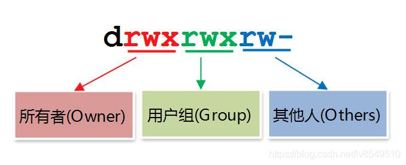
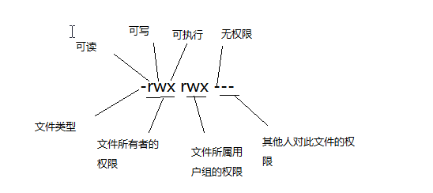

Linux 是一套免费使用和自由传播的类 Unix 操作系统，是一个基于 POSIX 和 UNIX 的多用户、多任务、支持多线程和多 CPU 的操作系统。Linux 能运行主要的 UNIX 工具软件、应用程序和网络协议。它支持 32 位和 64 位硬件。Linux 继承了 Unix 以网络为核心的设计思想，是一个性能稳定的多用户网络操作系统。而linux又有一个重要概念是万物皆文件，所以基于文件的权限控制就变得格外重要，可以保证文件可以被可用的用户做相应操作。
文件权限概念篇
- 查看文件权限命令
命令 功能 ls -l 查看文件信息 ls -ld 查看目录的属性以及权限 ll 查看文件属性和权限 ll -d 查看目录的属性和权限 ls -LR 递归显示目录、文件以及目录下的文件
文件权限的读取
查看文件信息，发现显示如下，具体每个位置代表什么含义呢？
接下来逐个解释一下每个位置的具体含义
1
2drwx------+ 7 royal staff 224 3 7 00:07 Documents
(1) （2） （3） （4） （5） （6） （7）(1) 文件类型及文件权限
两部分组成，长度是10位
1. 第一位代表文件类型
类型 含义 - 空文件或文本文件（普通文件） d 目录文件 l 软链接文件（相当于快捷方式） -s- socket套接字文件（特殊设备文件）（一个程序对外开放的门） b block块设备文件（特殊设备文件） c 字符设备文件（特殊设备文件） p 管道符文件
2. 文件权限
- 文件的权限针对三类对象进行定义
名称 含义 缩写 用途 owner 文件拥有者 u 文件拥有者对文件能做什么操作 group 文件所有组 g 文件所有组对文件能做什么操作 other 其他人 o 其他人对文件能做什么操作 、
- 文件的权限针对三类对象进行定义
- 每个文件针对每类访问者定义了三种主要权限
缩写 全写 含义 针对目录 针对文件 r Read 读操作 查看目录下的文件列表 读取文件内容 w Write 写操作 删除和创建目录下的文件 修改文件内容 x eXecute 执行操作 可以cd进入目录，能查看目录中文件的详细属性，能访问目录下文件内容（基础权限） 执行二进制文件或者sh文件等
- 每个文件针对每类访问者定义了三种主要权限
- 另 X：针对目录加执行权限，文件不加执行权限（因文件具备执行权限有安全隐患）
- 注意：root账户不受文件权限的读写限制，执行权限受限制、

(2) 文件被记录的次数
(3) 文件所有者
(4) 文件所有用户组
(5) 文件大小
- 对文件：文件大小
- 对目录：目录中子文件元数据（matedate可以理解为文件的属性）大小
(6) 文件的内容最后被修改的时间
(7) 文件（或者目录）的名称
- 大家还记不记得篇头提到的linux万物皆文件，所以目录名称也是文件名称
如果文件名之前多了一个 “.” ,则说明这个文件为“隐藏文件”，隐藏文件的list列表时，加-a参数可以显示。ls -al。
文件权限应用篇
- 了解了文件权限的概念，那么如何控制文件的权限呢？它也包含了改变文件所属用户组，改变文件所有者以及改变文件的权限
chgrp 改变文件所属用户组
- -R:进行递归的持续更改，也连同子目录下的所有文件、目录都更新成为这个用户组。
- 常常用在更改某一目录内所有文件的情况。
1
chgrp 【-R】 dirname/filename
chown 改变文件的所有者
- -R:进行递归的持续更改，同上
- 改变文件所有者和用户组的这两个命令的应用场景：复制文件，由于复制行为会复制执行者的属性和权限，因此复制后需要改变文件所属用户、用户组等。
1
2chown [-R] 账号名称 文件或目录
chown [-R] 账号名称：组名 文件或目录
chmod 改变文件的权限
- -R:进行递归的持续更改，同上
1
chmod [-R] 数字/符号 文件或目录
数字类型改变权限
- xyz 代表权限数字。如770
1
chmod [-R] xyz 文件或目录
- r：4
- w：2
- x：1
- 每种身份各自的三个权限分数是需要累加的。
- 例如：权限为（-rwxrwx—）分数分表是：
- owner = rwx = 4 + 2 + 1 = 7
- group = rwx = 4 + 2 + 1 = 7
- others = — = 0 + 0 + 0 = 0
- 所以在设置权限时，该文件的权限数字就是770.
符号改变权限
使用u、g、o三个字母代表user、group、others 三种身份，此外a代表all，即所有身份。
命令 所属（可组合） 运算符号 权限（可组合） 文件或目录 chmod u 文件或目录 g +增加 r o -删除 w a =设置 x 示例
1
2
3chmod u=rwx,go=rx .bashrc
chmod a+w .bashrc
chmod a-x .bashrc
小结
- 基于linux万物皆文件这个概念，控制好文件的权限，也就等于控制住了整个系统的安全，所以合理分配文件权限才是保证系统安全的重中之重。我希望可以和大家分享学习的方法，并不是单单是这篇博客，多向自己提出问题，看看自己是否能够解答，就能知道自己到底是不是真正地理解且掌握了想学习的内容。